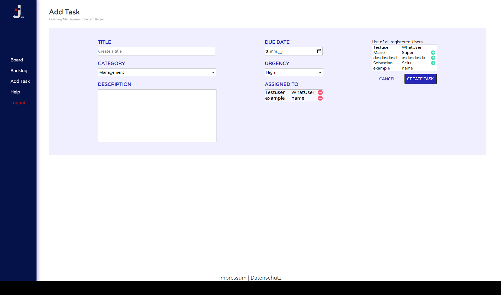

Help
First of all this project has been created by the Developer Akademie students: Peter Rehmann, Sebastian Seitz and Adilet Sharshekeev
Login

If you haven't created an account yet, click the "Create Account" button in the top right corner. Alternatively, you can enter the site logging in.
Board

In the board section you can see the tasks which have been created. There are four columns which show you the status of each card. Every task starts off in the "to-do" column. After that, a task is in progress and later its functionality is being tested. Finally a task cards lands in the "done" column. Every card is draggable, so the members of the project can dynamically display their working process.
Backlog

In the backlog section you can see an overview of all the created tasks. They will remain there even if they are already marked as "done" on the board. However, you can delete individual backlog cards if you wish to.
AddTask
In the Add Task section you can create a new task for your team. Find a title and a description for the task. You can also set the urgency and the category of the task. Additionally you must set a date at which the task is due. As a last step, add the user who is responsible for the task. Note that you cannot create a task until you have added a user.